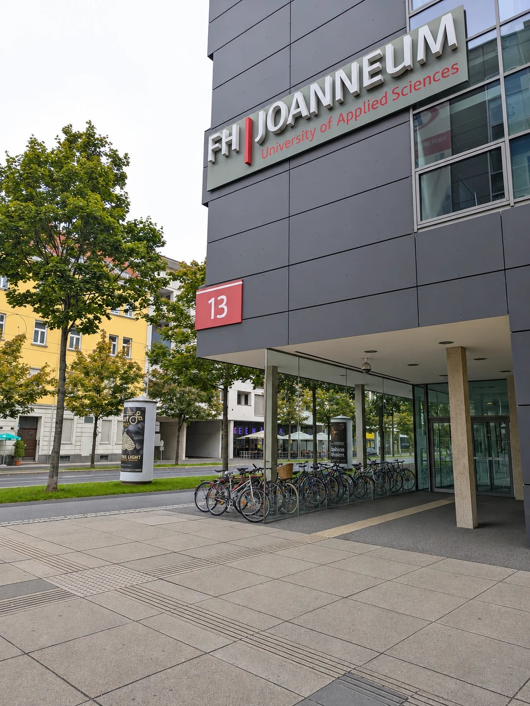

My First Research Project: The FH JOANNEUM Homepage
In the third semester, for the first time, I took part in a real research project: an analysis of fh-joanneum.at, and the results will be useful for the redesign next year.

From the first steps of this work, I realised how important research is. In summer, I met the university team, and together we set the main aims of the project. For the first time, I saw how a client’s wishes are turned into research questions.
Next, I put into practice what I had learned in COS: think-aloud and card sorting sessions with seven participants from Austria and other parts of the world. Additionally, I used my experience from my job: a benchmark of six university websites from the EU, the USA and Asia and an analysis of Google Analytics data.
The hardest part for me was finding respondents. My advice to anyone reading this: start looking for respondents as soon as possible!
I recently submitted the work and have already received positive feedback. For me, it was a valuable experience: now I have practical experience of a real research project, from defining the aims to writing the recommendations.
Huge thanks to Robert Gutounig, who led the project from day one. Without him, it would not have been possible.